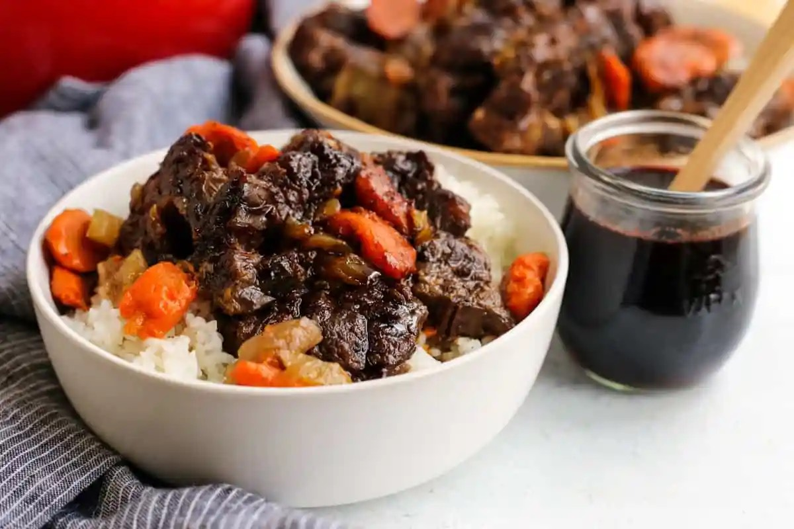
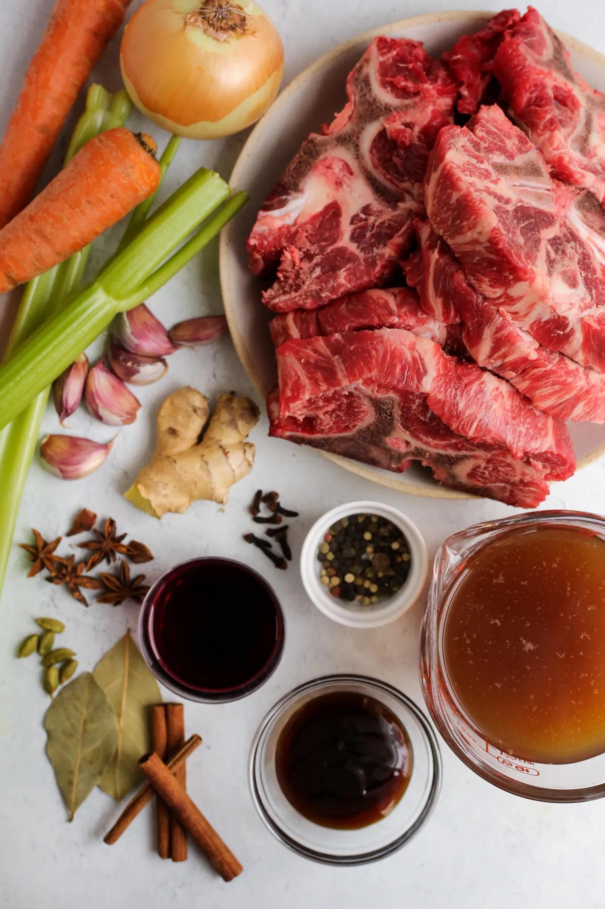
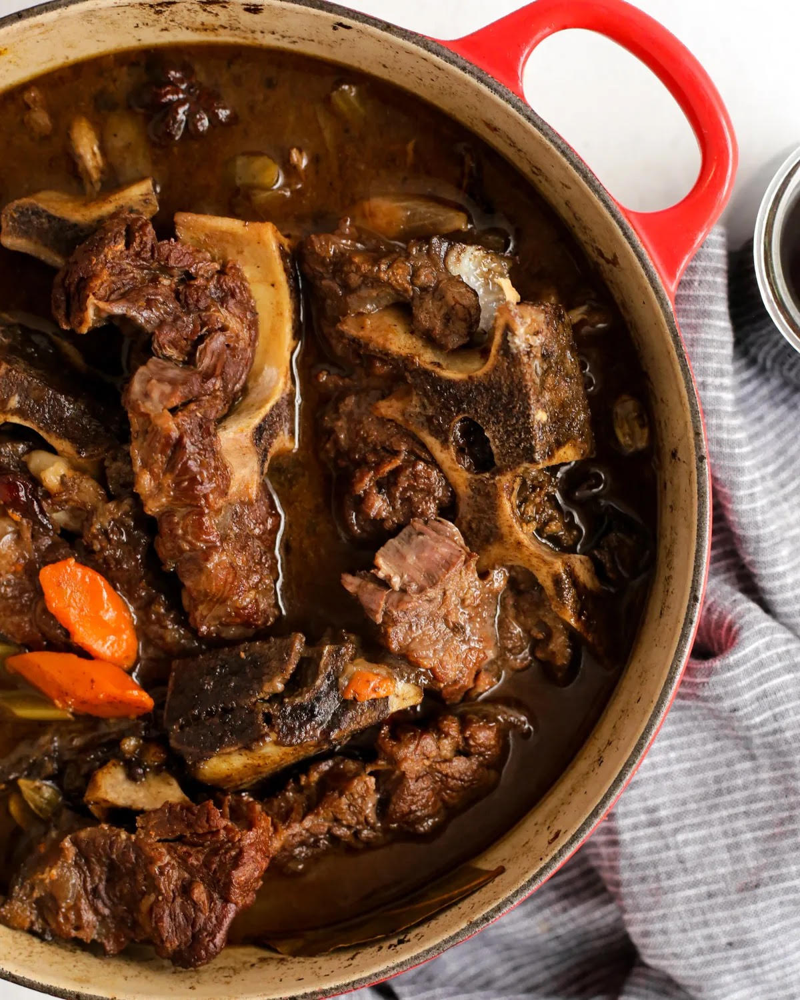

Here are the key ingredients you'll need to make this braised beef recip

Ingredients You'll Need
- Beef cuts like shorts ribs, oxtails, stew meat, or neck bones.
Depending on the cost
and availability, any of these cuts can work. The general cooking process is the same,
but you may want to adjust the cooking times.
For example, stew meat may need
longer or shorter cooking times depending on the size of the pieces and how lean they
are.
- Aromatic vegetables.
You can't go wrong with the classic combo of onions, carrots,
and celery. Try to use a large onion plus two medium carrots and two medium stalks of
celery for an ideal ratio. However, it doesn't need to be exact so just use what you have!
Just don't forget to include the garlic cloves and fresh ginger pieces.
- Dried spices.
This is where all the flavor comes from for the braising liquid
Peppercorns, green cardamom pods, star anise, Ceylon cinnamon sticks, cloves, and a
bay leaf or two will infuse an incredible amount of flavor into your recipe, plus make
your kitchen smell amazing!
- Pomegranate juice.
Since this is a braised beef recipe without wine, we still need some
kind of liquid for deglazing the pan. It's fine to use more of the beef broth, but I really
recommend including the pomegranate juice if you can. The rest goes into the
pomegranate glaze, so you'll definitely use an entire bottle without it going to waste!
Beyond that, use some beef broth or stock (homemade or store bought) and oyster sauce
to round out the ingredient list. I also recommend serving it with something like white rice
when it's finished.

How To Make Braised Beef Without Wine
If you've never tried braising beef before, stick around! If you have, feel free to jump ahead
to the recipe. But this process is easy to master and will forever change the way you cook
with beef in recipes like this.
Here's a primer on how to do it:
- Pat your meat dry and season generously with salt. If you're worried about using “too
much” just know you could probably stand to use a little more.
- Heat some oil in your Dutch oven. Once heated, brown the beef on all sides until it's
golden brown and crisped. If you need to, work in batches to avoid overcrowding your
pan. You want to keep the heat high enough to achieve browning, not just cooking the
outside edges of your beef.
- Transfer the browned beef to a platter or bowl to free up the Dutch oven. Add your
aromatics (in this case, onions, carrots, and celery).
Cook for at least 5-6 minutes or until
the edges start to brown, too. Then add your garlic and ginger to start infusing those
flavors,too.
- By this time, you'll have some browned bits stuck to the bottom of the pan. Add a small
amount of liquid to “deglaze” or release those cooked-on bits.
Most recipes call for red
wine, which pairs nicely with beef. However, for this braised beef recipe we're using
pomegranate juice instead. Use a wooden spatula to scrape the bottom of the pan and
once simmering, add the rest of the liquid and dried spices.
- Once you've poured the beef broth in, add the browned beef back. The liquid may not
fully cover the beef. Reduce the heat to low so it doesn't boil over.
- Cover and cook for at least two hours. At that point, you can remove the lid and test it to
see if the beef is tender enough to slide off the bone. If not, let it go for another 30
minutes or so and check again.
That's pretty much it! While the process may seem intimidating or too long to be worth it,
don't let that stop you. The wait is definitely worth it, especially since the majority of work is
done up front.
